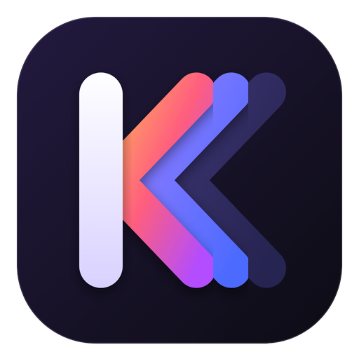

StackerTu equipo, tus ideas y tus archivos en un solo lugar.
Stacker es una aplicación de escritorio gratuita para Windows pensada para equipos creativos (productoras, estudios de diseño, agencias). Su objetivo es que un equipo pueda organizar un proyecto en un solo lugar: conversar por chat y voz, juntar referencias visuales en moodboards, planificar fechas en calendarios compartidos y acceder a sus archivos de Dropbox, sin saltar entre varias aplicaciones.
¿Para qué usa Stacker tu cuenta de Google?
Solo para que inicies sesión. Stacker pide únicamente tu nombre, tu email y tu foto de perfil, para crear tu cuenta y mostrarle a tu equipo quién sos. No accede a Gmail, Drive, contactos ni a ningún otro dato de tu cuenta de Google. Más detalles en la Política de privacidad.
Qué incluye
- Espacios de trabajo con roles y permisos
- Chat en tiempo real y mensajes directos
- Canales de voz
- Moodboards infinitos para referencias
- Calendarios compartidos
- Integración con Dropbox